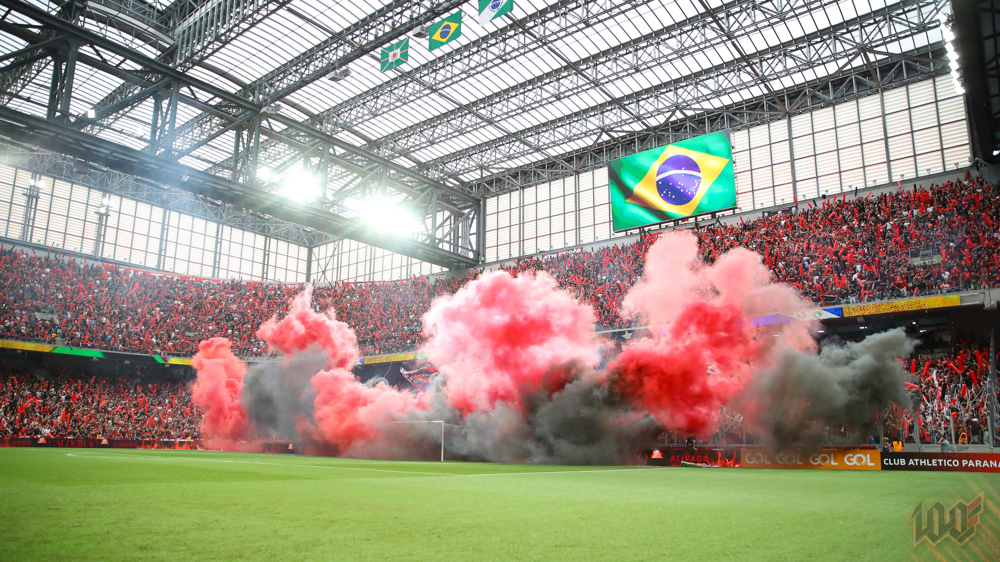

.svg) Curiosidades do Furacão
Curiosidades do Furacão
Descubra Fatos Incríveis sobre o Athletico
O Furacão carrega uma história rica em conquistas, inovações e curiosidades que o diferenciam de todos os clubes brasileiros.
Clique para descobrir!
Aperte o botão abaixo e veja curiosidades únicas sobre o Furacão.